authors
maintainers
- ansible
contributors
- mpdehaan : 8 commits
- abadger : 3 commits
- mikeputnam : 1 commits
- direvus : 1 commits
- sivel : 1 commits
- mavimo : 1 commits
- gpocentek : 1 commits
- dorfsmay : 3 commits
- bpennypacker : 3 commits
- h1ppo : 1 commits
- dagwieers : 2 commits
- jpmens : 11 commits
- jimi-c : 1 commits
total issue counts
feature pull request: 5
pullrequest: 45
docs pull request: 4
bugfix pull request: 36
feature idea: 1
issue: 27
bug report: 26
issue history
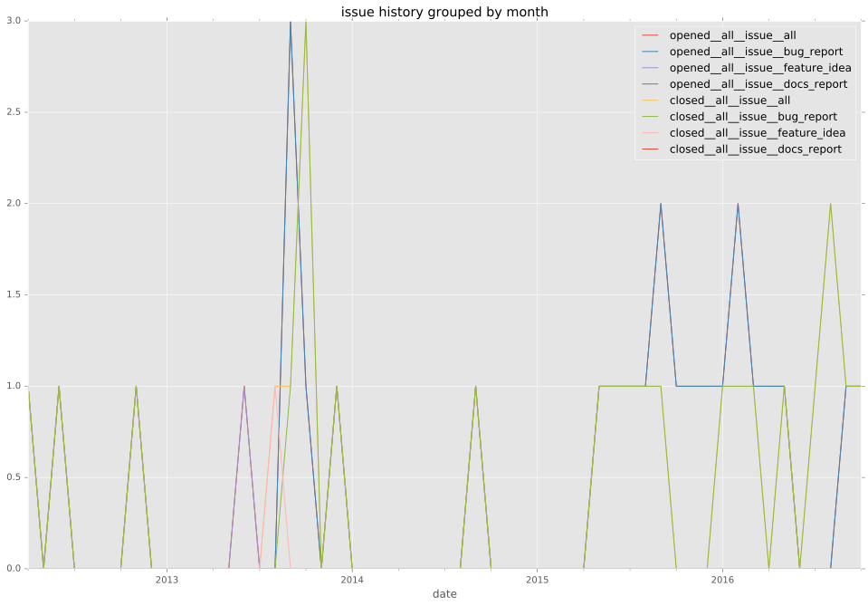
pullrequest history
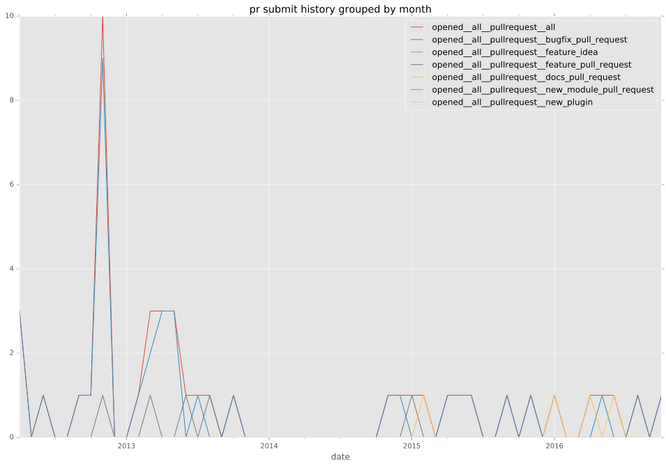
 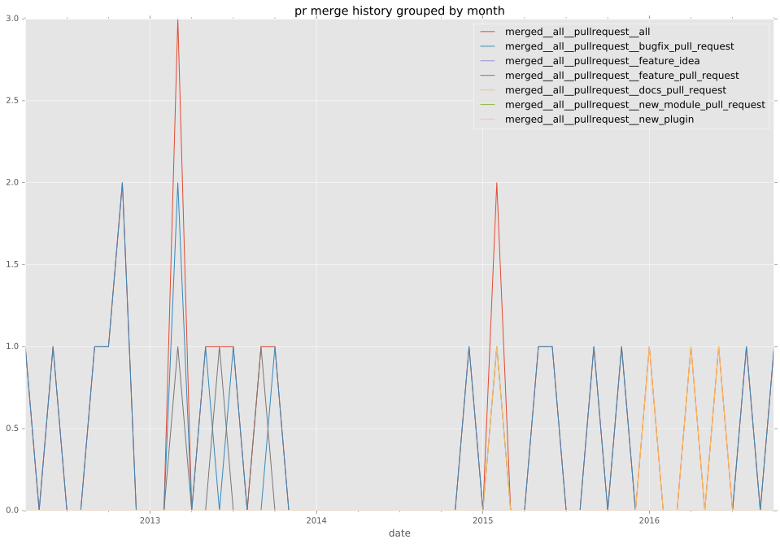
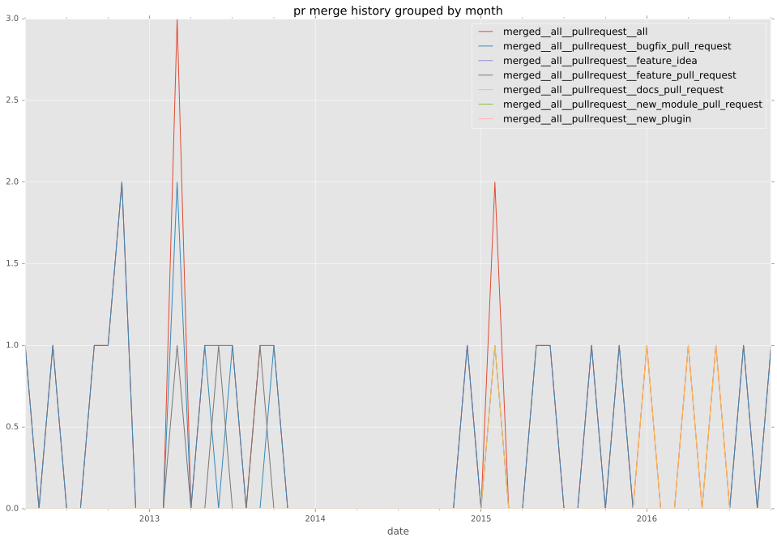
days open by issue type
bugfix pull request
count: 54
std: 14.7695079397
min: 0
max: 107
median: 0.0
mean: 4.11111111111
all
count: 95
std: 55.2968007231
min: 0
max: 314
median: 0.0
mean: 17.8
pullrequest
count: 0
std: nan
min: nan
max: nan
median: nan
mean: nan
docs pull request
count: 8
std: 0.0
min: 0
max: 0
median: 0.0
mean: 0.0
feature pull request
count: 9
std: 18.3847763109
min: 0
max: 46
median: 8.0
mean: 16.0
feature idea
count: 1
std: nan
min: 85
max: 85
median: 85.0
mean: 85.0
issue
count: 0
std: nan
min: nan
max: nan
median: nan
mean: nan
bug report
count: 23
std: 101.347248715
min: 0
max: 314
median: 6.0
mean: 53.9130434783
closures grouped by total days open
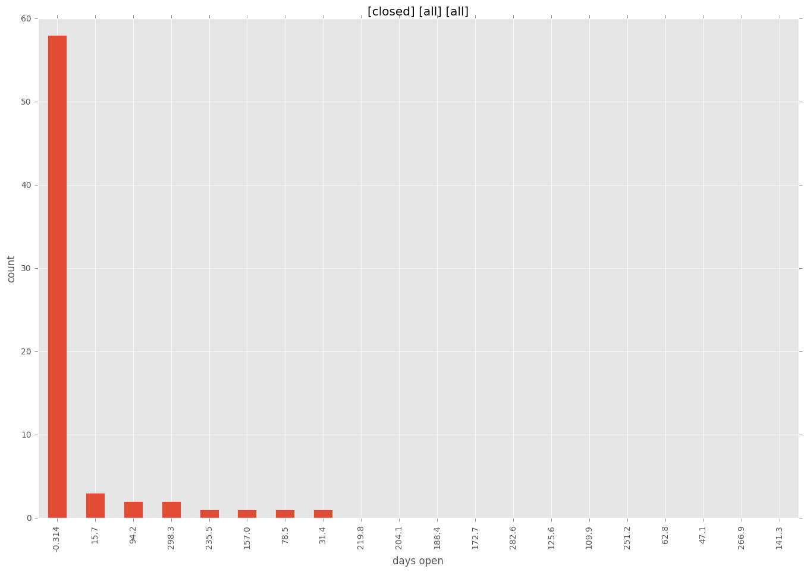
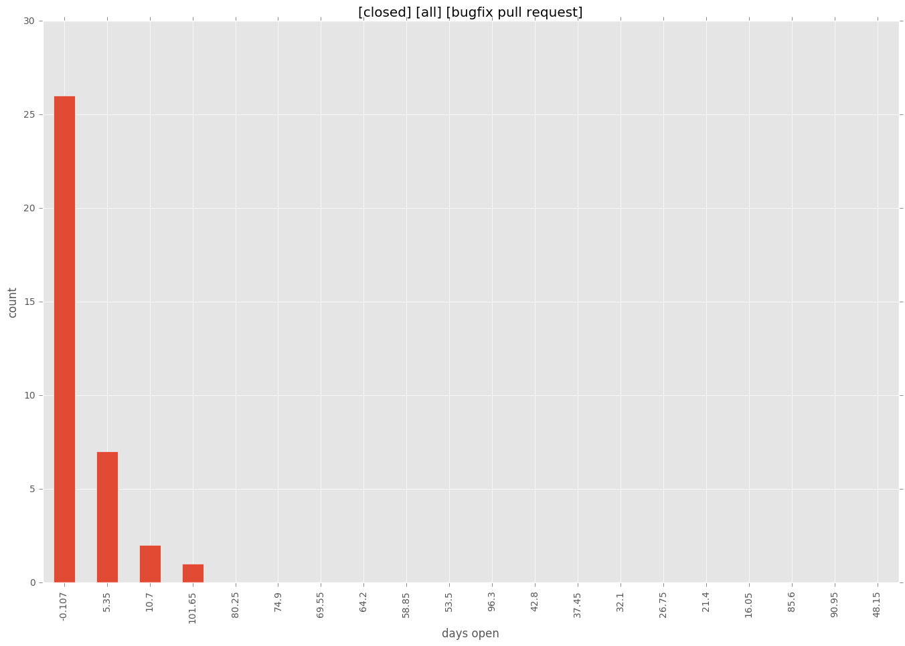
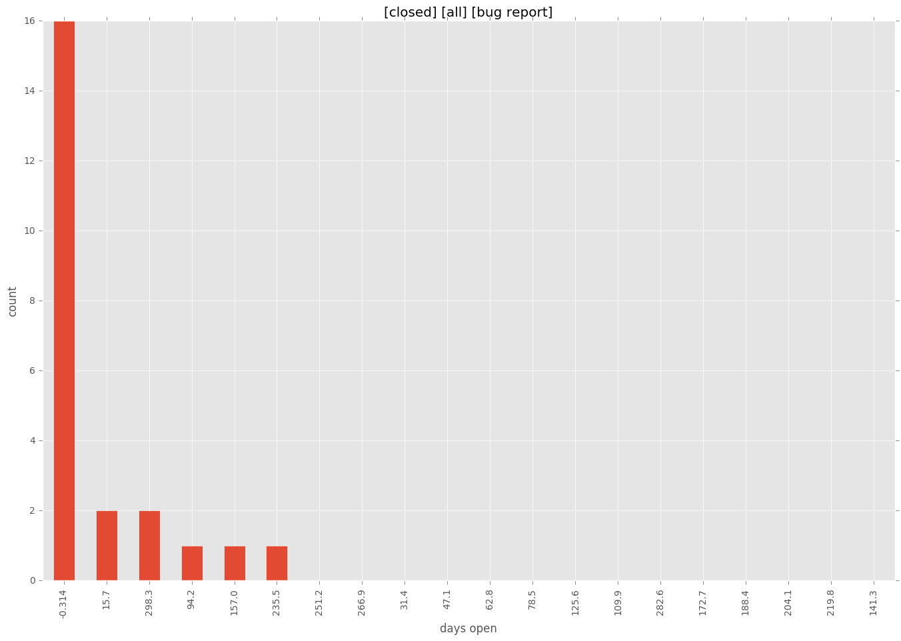
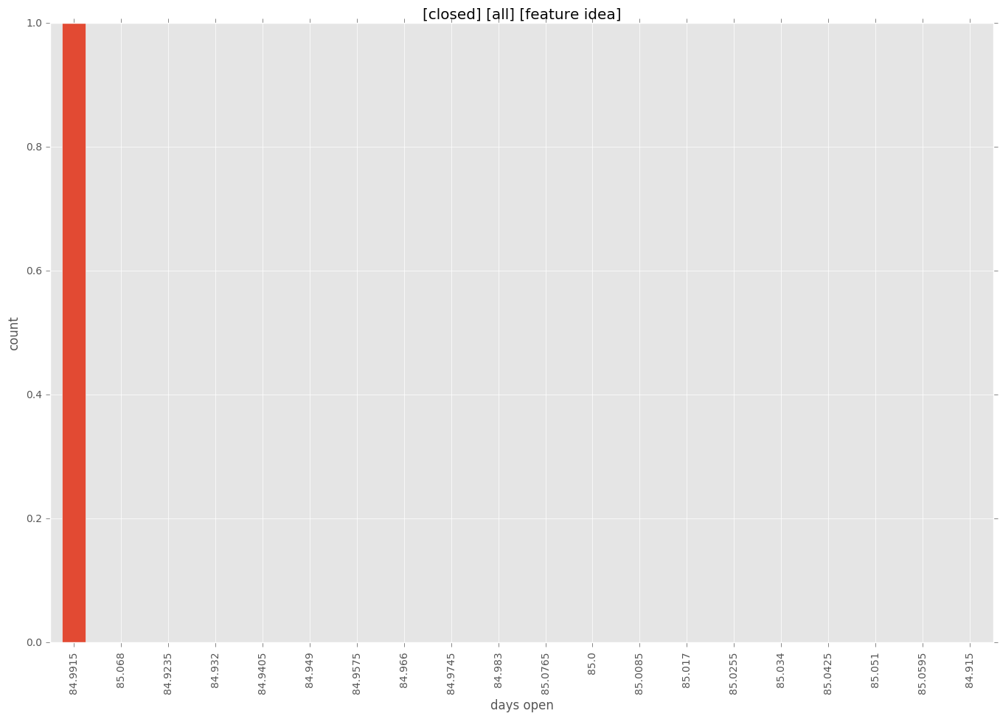
 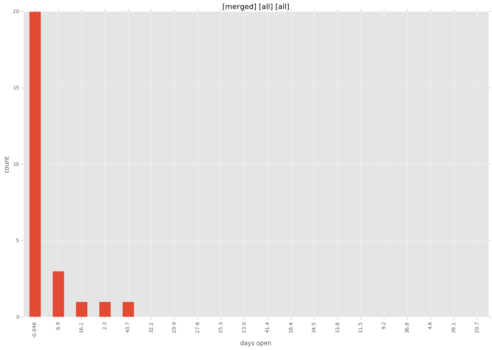
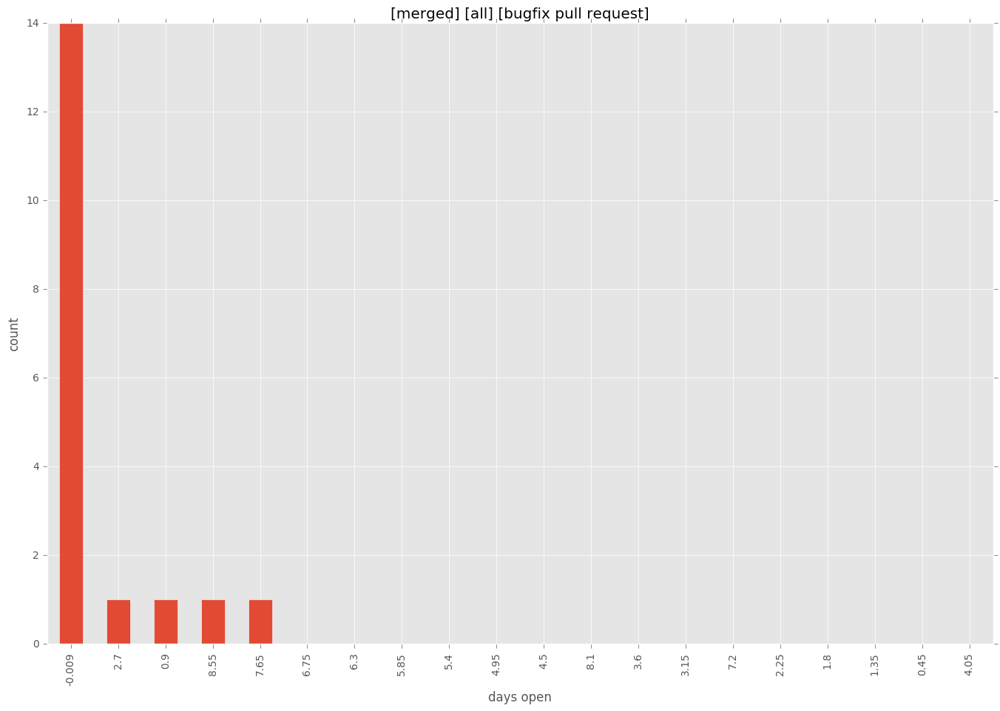
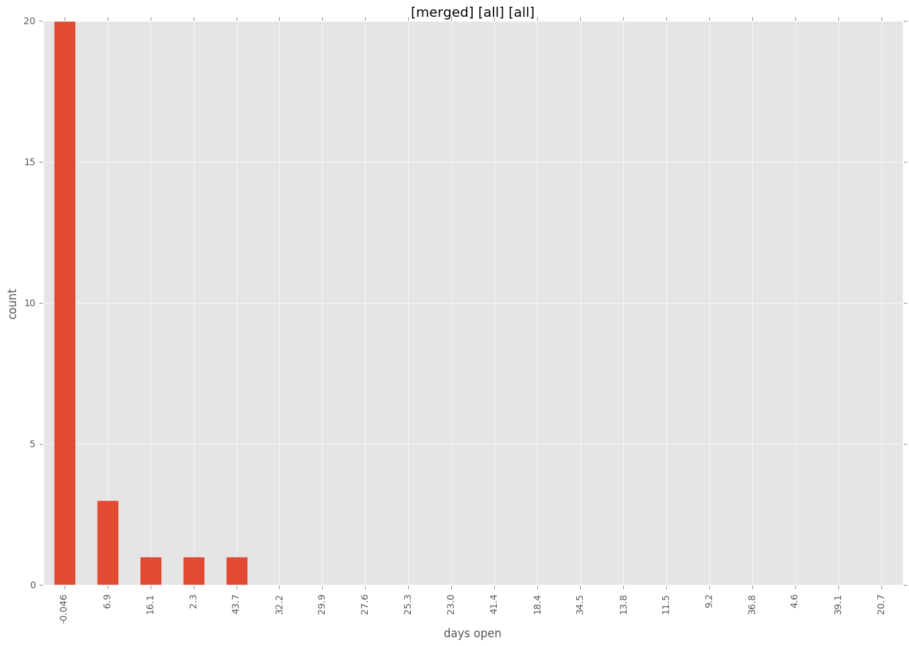
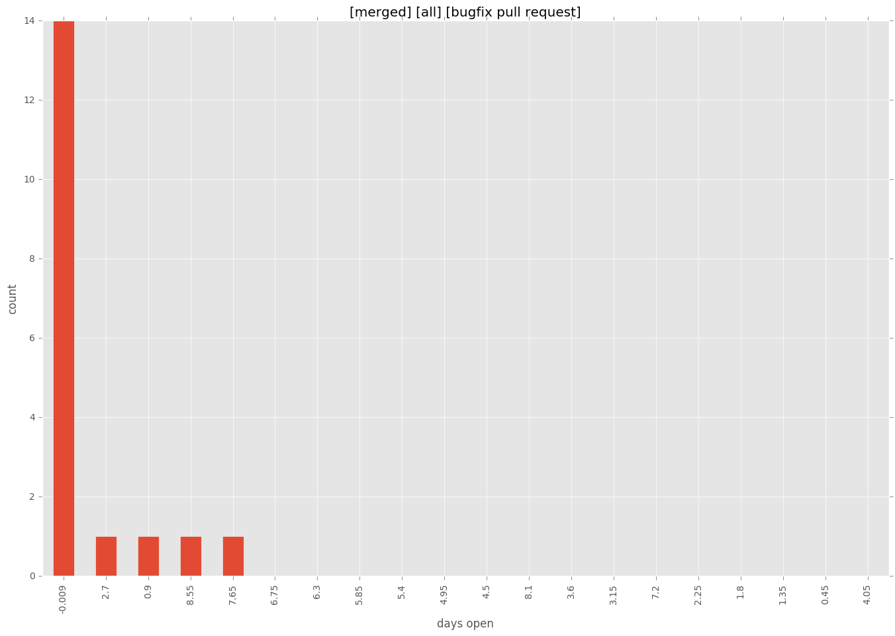